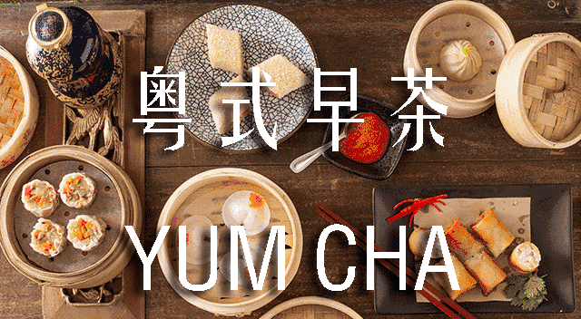

品味岭南饮食文化的千年传承
广式早茶文化起源于清代咸丰同治年间，最初出现在广州的"二厘馆"。这种平民化的茶寮提供"一盅两件"——一盅粗茶，两件点心，成为劳苦大众的歇脚处。随着时间推移，茶楼逐渐发展成为重要的社交场所...

传统粤点"四大天王"之首，虾饺，又称水晶饺，是广东省广州市的一种特色小吃，属于粤菜系，该菜品始创于20世纪初广州市郊伍村五凤乡的一间家庭式小茶楼，已经有百年历史；传统的虾饺是半月形、蜘蛛肚共有十二褶的，馅料有虾，有肉，有笋，味道鲜美爽滑，美味可口。 虾饺发展：黑松露虾饺、避风塘虾饺、工夫汤虾饺、水晶虾饺、子母虾饺等。
（虾馅）：将2/3的的虾肉剁成泥，1/3切成丁，胡萝卜切碎。剁成泥的虾泥中加入胡萝卜，加入盐、糖、姜、醋、胡椒粉搅拌均匀。
然后把馅捞起，从一尺高的位置往碗里甩。重复20－30次，直至彻底搅上劲儿，下入植物油搅匀，放入冰箱冷冻15分钟。冷冻15分钟后，从冰箱取出，加入剩下的虾肉搅拌均匀，即可放入冰箱冷藏备用。
（虾皮）：准备好材料150克澄粉和10克木薯粉、盐混合拌匀，另外10克木薯粉暂放一边备用。烫面：向混合的粉中冲入沸水，边冲边用筷子搅成雪花状，尽量不要有干面，盖上盖子焖5分钟。
将烫面趁热揉搓均匀，分次拌入剩余的10克木薯粉。加入10克左右的猪油再揉，逐渐变成质地均匀的面团。
置于容器里，以湿布遮盖，醒发20分钟左右，然后取出一小块面团儿，搓成长条，拽成小剂子。
将小剂子面团搓圆、擀成圆皮儿。
（包法）：虾饺皮要尽可能的薄，越薄包出来的饺子越剔透，拿起饺子皮，近乎透明。
放入适量馅料，不要太多，以免在包制的时候撑破皮，或者蒸的时候爆裂，这个时候还是可以看见皮是非常薄的。
一只手推虾饺皮，一只手捏住推过来的皮子，成为皱褶，以此类推全部捏完，最后捏好后还要捏实一点，怕在蒸的时候裂开。
接下来锅中烧水开，将包好的虾饺码入铺油纸（或者红萝卜）的笼屉上，盖上盖子蒸制4－5分钟即可，火力不要开到最大，中偏大一点就好，太猛的火力虾饺皮容易裂开。
蒸制时间结束后，关火，取出虾饺放入盘中即可。